일반기계기사 (2017-05-07 기출문제)
1과목: 재료역학
1. 길이 15m, 봉의 지름 10mm인 강봉에 P=8kN을 작용시킬 때 이 봉의 길이 방향 변형량은 약 몇 cm인가? (단, 이재료의 세로탄성계수는 210GPa이다.)
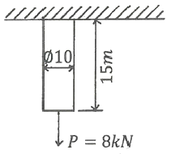
- 0.52
- 0.64
- 0.73
- 0.85
(정답률: 69%)

2. 그림과 같은 일단고정 타단지지보의 중앙에 P=4800N의 하중이 작용하면 지지점의 반력 (RB)은 약 몇 kN인가?
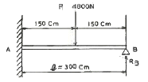
- 3.2
- 2.6
- 1.5
- 1.2
(정답률: 58%)
3. 정사각형의 단면을 가진 기둥에 P= 80kN의 압축하중이 작용할 때 6MPa의 압축응력이 발생하였다면 단면의 한 변의 길이는 몇 cm 인가?
- 11.5
- 15.4
- 20.1
- 23.1
(정답률: 70%)
4. 다음 막대의 z방향으로 80kN의 인장력이 작용할 때 x 방향의 변형량은 몇μm인가? (단, 탄성계수 E=200 Gpa, 포아송 비 v=0.32 막대크기 x=100mm, y=50mm, z=1.5m 이다)
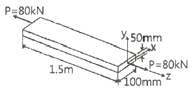
- 2.56
- 25.6
- -2.56
- -25.6
(정답률: 35%)
5. 그림과 같은 단순보(단면 8cm × 6cm)에 작용하는 최대 전단웅력은 몇 kPa인가?
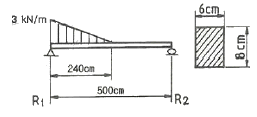
- 315
- 630
- 945
- 1260
(정답률: 39%)
6. 그림과 같은 단순보에서 전단력이 0이 되는 위치는 A지점에서 몇 m 거리에 있는가?
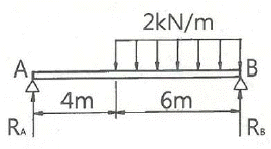
- 4.8
- 5.8
- 6.8
- 7.8
(정답률: 58%)
7. 그림과 같은 직사각형 단면의 보에 P=4kN의 하중이 10° 경사진 방향으로 작용한다. A점에서의 길이 방향의 수직응력을 구하면 약 몇 MPa 인가?
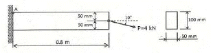
- 3.89
- 5.67
- 0.79
- 7.46
(정답률: 30%)
8. 두께가 1cm, 지름 25cm의 원통형 보일러에 내압이 작용하고 있을 때, 면내 최대 전단응력이 -62.5MPa이었다면 내압 P는 몇 MPa인가?
- 5
- 10
- 15
- 20
(정답률: 18%)
9. 그림과 같이 전체 길이나 3L인 외팔보에 하중P가 B점과 C점에 작용할 때 자유단 B에서의 처짐량은? (단, 보의 굽힘강성 EI는 일정하고, 자중은 무시한다.)
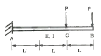
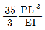
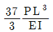
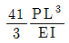
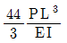
(정답률: 42%)
10. 세로탄성계수가 210GPa인 재료에 200MPa의 인장응력을 가했을 때 재료 내부에 저장되는 단위 체적당 탄성변형에너지는 약 몇 N∙m/m3인가?
- 95.238
- 95238
- 18.538
- 185380
(정답률: 55%)
11. 그림과 같이 한변의 길이가 d인 정사각형의 단면의 Z-Z 축에 관한 단면계수는?
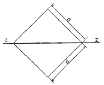
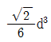
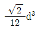
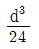
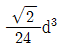
(정답률: 48%)
12. J를 극단면 2차 모멘트, G를 전단탄성계수, L을 축의 길이, T를 비틀림모멘트라 할 때 비틀림각을 나타내는 식은?
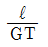
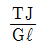
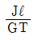
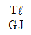
(정답률: 72%)
13. 직경 d, 길이 ℓ 인 봉의 양단을 고정하고 단면 m-n의 위치에 비틀림모멘트 T를 작용시킬 때 봉의 A부분에 작용하는 비틀림모멘트는?
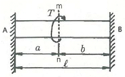
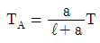
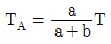
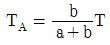
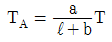
(정답률: 65%)
14. 그림과 같은 직사각형 단면을 갖는 단순지지보에 3kN/m의 균일 분포하중돠 축방향으로 50kN의 인장력이 작용할 때 단면에 발생하는 최대 인장 응력은 약 몇 MPa인가?
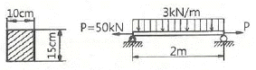
- 0.67
- 3.33
- 4
- 7.33
(정답률: 30%)
15. 공칭응력(nominal stress: σn)과 진응력(true stress : σt)사이의 관계식으로 옳은 것은? (단, σn은 공칭변형율(nominal strain), σt는 진변형율(true strain)이다.)
- σt=σn(1+εt)
- σt=σn(1+εn)
- σt=1n(1+σn)
- σt=1n(σn+σn)
(정답률: 55%)
16. 그림과 같은 부정정보의 전 길이에 균일 분포하중이 작용할 때 전단력이 0이 되고 최대 굽힘모멘트가 작용하는 단면은 B단에서 얼마나 떨어져 있는가?
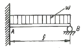
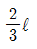
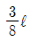
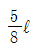
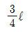
(정답률: 58%)
17. 동일한 전단력이 작용할 때 원형 단면 보의 자름을 d에서 3d로 하면 최대 전단응력의 크기는? (단 Tmax는지름이 d일 때의 최대전단응력이다.)
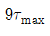
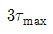
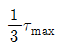
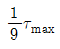
(정답률: 64%)
18. 오일러의좌굴 응력에 대한 설명으로 틀린 것은?
- 단면의 회전반경의 제곱에 비례한다.
- 길이의 제곱에 반비례한다.
- 세장비의 제곱에 비례한다,
- 탄성계수에 비레한다.
(정답률: 55%)
19. 그림과 같이 단순화한 길이 1m의 자축 중심에 집중하증 100kN이 작용학고, 100rpm으로 400kW의 동력을 전달할 때 필요한 자축의 지름은 최소 cm인가? (단, 축의 허용 굽힘응력은 85MPa로 한다.
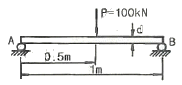
- 4.1
- 8.1
- 12.3
- 16.3
(정답률: 27%)
20. 그림과 같이 강선이 천정에 매달려 100kN의 무게를 지탱하고 있을 때, AC 강선이 받고 있는 힘은 약 몇 kN인가?
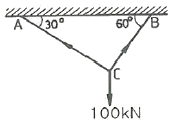
- 30
- 40
- 50
- 60
(정답률: 72%)
2과목: 기계열역학
21. 역 Carnot cycle로 300K 와 240K 사이에서 작동하고 있는 냉동기가 있다. 이 냉동기의 성능계수는?
- 3
- 4
- 5
- 6
(정답률: 67%)
22. 그림의 랭킨 사이클(온도(T)-엔트로피(s)선도)에서 각각의 지점에서 엔탈피는 표와 같을 때 이 사이클의 효율은 약 몇 % 인가?
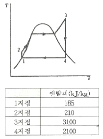
- 33.7%
- 28.4%
- 25.2%
- 22.9%
(정답률: 66%)
23. 보일러 입구의 압력이 9800kN/m2이고, 응축기의 압력이 4900N/m2일 떄 펌프가 수행한 일은 약 kJ/kg인가? (단, 물의 비체적은 0.001m3/kg이다.)
- 9.79
- 15.17
- 87.25
- 180.2
(정답률: 64%)
24. 다음 중 정확하게 표기된 SI 기본단위(7가지)의 개수가 가장 많은 것은? (단, SI 유도단위 및 그 외 단위는 제외한다.)
- A, Cd, C, kg, m, Mol, N, s
- cd, J, K, kg, m, Mol, Pa, s
- A, J, C, ,kg, km, mol, S, W
- K, kg, km, mol, N, Pa, S, W
(정답률: 37%)
25. 압력이 106N/m2, 체적이 1m3인 공기가 압력이 일정한 상태에서 400kJ의 일을 하였다. 변화후의 체적은 약 m3인가?
- 1.4
- 1.0
- 0.6
- 0.4
(정답률: 53%)
26. 8℃의 이상기체를 가역단열 압축하여 그 제척을 1/5로 하였을 때 기체의 온도는 약 몇 ℃인가? (이 기체의 비열비는 1.4이다.)
- -125℃
- 294℃
- 222℃
- 262℃
(정답률: 55%)
27. 그림과 같이 상태 1, 2사이에서 계가 1→A→2→B→1과 같은 사이클을 이루고 있을 때, 열역학 제1법칙에 가장 적합한 표현은? (단, 여기가 Q는 열량, W는 계가 하는일, U는 내부에너지를 나타낸다.)
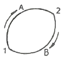
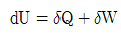
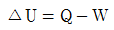
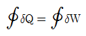
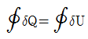
(정답률: 40%)
28. 열교환기를 흐름 배열(flow arrangrmrnt)에 따라 분류할 때 그림과 같은 형식은?
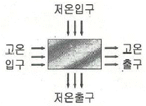
- 평행류
- 대향류
- 병행류
- 직교류
(정답률: 65%)
29. 100kPa, 25℃ 상태의 공기가 있다. 이 공기의 엔탈피가 298.615kJ/kg 이라면 내부에너지는 약 몇 kJ/kg인가? (단, 공기는 분자량 28.97인 이상기에호 가정한다.)
- 213.⑤kJ/kg
- 241.07kJ/kg
- 298.15kJ/kg
- 383.72kJ/kg
(정답률: 51%)
30. 다음 중 비가역 과정으로 볼 수 없는 것은?
- 마찰 현상
- 낮은 압력으로의 자유팽창
- 등온 열전달
- 상이한 조성물질의 혼합
(정답률: 46%)
31. 열역학 제2법칙과 관련된 설명으로 옳지 않은 것은?
- 열효율이 100%인 열기관은 없다.
- 저온 물체에서 고온 물체로 열은 자연적으로 전달되지 않는다.
- 폐쇄계와 주변계가 열교환이 일어날 경우 폐쇄계와 주변계 각각의 엔트로피는 모두 상승한다.
- 동일한 온도 범위애서 작동되는 가역 열기관은 비가역 열기관보다 열효율이 높다.
(정답률: 47%)
32. 온도 15℃, 압력이 100kPa 상태의 체적이 일정한 용기 안에 어떤 이상 기체 5kg이 들어있다. 이 기체가 50℃가 될 떄까지 가열되는 돈안의 엔트로피 증가량은 약 몇 kJ/K 인가? (단, 이 기체의 정압비열과 정적비열은 각각 1.001kJ/(kg∙K), 0.7171 kJ/(kg∙K)이다.
- 0.411
- 0.486
- 0.575
- 0.732
(정답률: 55%)
33. 저열원 20℃와 고열원 700℃ 사이에서 작동하는 카르노 열기관의 열효율은 약 몇 % 인가?
- 30.1%
- 69.9%
- 52.9%
- 74.1%
(정답률: 65%)
34. 어느 중기터빈에 0.4kg/s로 증기가 공급되어 260kW의 출력을 낸다. 입구의 증기 엔탈피 및 속도는 각각 3000kJ/kg, 720m/s, 출구가 증기엔탈피 및 속도는 각각 2500kJ/kg, 120m/s이면. 이 터빈의 열손실은 약 몇 kW가 되는가?
- 15.9
- 40.8
- 20.0
- 104
(정답률: 50%)
35. 압력이 일정할 때 공기 5kg을 0℃에서 100℃까지 가열하는데 필요한 열량은 약 몇 kJ인가? (단, 비열(Cp)은 온도 T(℃)에 관계한 함수로 Cp(kJ/(kg∙℃))= 1.01+0.000079×T이다.)
- 365
- 436
- 480
- 507
(정답률: 65%)
36. 다음 온도에 관한 설명 중 틀린 것은?
- 온도는 뜨겁거나 차가운 정도를 나타낸다.
- 열역학 제0법칙은 온도 측정과 관계된 법칙이다.
- 섭씨온도는 표준 기압하에서 물의 어는 점과 끊는 점을 각각 0과 100으로 부여한 온도 척도이다.
- 화씨온도 F와 절대온도 K 사이에는 K=F+273.15의 관계가 성립한다.
(정답률: 66%)
37. 오토(Otto) 사이클에 관한 일반적인 설명 중 틀린 것은?
- 불꽃 점화 기관의 공기 표준 사이클이다.
- 연소과정을 정적 가열과정으로 간주한다.
- 압축비가 클수록 효율이 높다.
- 효율은 작업기체의 종류와 무관하다.
(정답률: 57%)
38. 출력 10000kW의 터빈 플랜트의 시간당 연료소비량이 5000kg/h이다. 이 플랜트의 열효율은 약 % 인가? (단, 연료의 발열량은 33440kJ/kg이다.)
- 25.4%
- 21.5%
- 10.9%
- 40.8%
(정답률: 65%)
39. 밀폐계에서 기체의 압력이 100kPa으로 일정하게 유지되면서 체적이 1m3에서 2m3으로 중가되었을 때 옳은 설명은?
- 밀폐계의 에너지 변화는 없다.
- 외부로 행한 일은 100kJ이다.
- 기체가 이상기체라면 온도가 일정하다.
- 기체가 받은 열은 100kJ이다.
(정답률: 59%)
40. 10kg의 증기가 온도 50℃, 압력 38kPa, 체적 7.5m3일 때 총 내부에너지는 6700kJ이다. 이와 같은 상태의 증기가 가지고 있는 엔탈피는 약 몇 kJ인가?
- 606
- 1794
- 33⑤
- 6985
(정답률: 63%)
3과목: 기계유체역학
41. 압력 용기에 정착된 게이지 압력계의 눈금이 400kPa를 나타내고 있다. 이 때 실험실에 놓여진 수은 기압계에서 수은의 높이는 750mm 이었다면 압력 용기의 절대압력은 약 몇 kPa인가? (단, 수은의 비중은 13.6이다.)
- 300
- 500
- 410
- 620
(정답률: 61%)
42. 나란히 놓인 두개의 무한한 평판 사이의 층류 유동에서 속도 분포는 포물선 형태를 보인다. 이 때 유동의 평균 속도(Vav)와 중심에서의 최대 속도(Vmax)의 관계는?
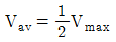
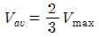
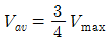
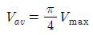
(정답률: 44%)
43. 점성계수의 차원으로 옳은 것은? (단, F는 힘, L은 길이, T는 시간의 차원이다.)
- FLT-2
- FL2T
- FL-1T-1
- FL-2T
(정답률: 43%)
44. 무게가 1000N인 물체를 지름 5m 인 낙하산에 매달아 낙하할 때 종속도는 몇 m/s가 되는가? (단, 낙하산의 항력계수는 0.8, 공기의 밀도는 1.2kg/m3이다.)
- 5.3
- 10.3
- 18.3
- 32.2
(정답률: 62%)
45. 2m/s의 속도로 물이 흘를 때 파토관 수두 높이 h는?
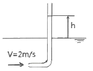
- 0.⑤3m
- 0.102m
- 0.20m
- 0.412m
(정답률: 67%)
46. 안지름 10cm인 파이프에 물이 평균속도 1.5cm/s로 흐를 때 (경우 ⓐ)와 비중이 0.6이고 점성계수가 물의 1/5인 유체 A가 물과 같은 평균속도로 동일한 관에 흐를 때 (경우ⓑ), 파이프 중심에서 최고속도는 어느 경우가 더 빠른가? (단, 물의 점섬계수는 0.001kg/m∙s)이다.)
- 경우ⓐ
- 경우ⓑ
- 두 경우 모두 최고속도가 같다.
- 어느 경우가 더 빠른지 알 수 없다.
(정답률: 28%)
47. 다음 중 2차원 비압축성 유동이 가능한 유동은 어떤 것인가? (단, u는 x방향 속도 성분이고, v는 y방향 속도 성분이다.)
- u=x2-y2, v=-2xy
- u=2x2-y2, v=4xy
- u=x2+y2, v=3x2-2y2
- u=2x+3xy, v=-4xy+3y
(정답률: 51%)
48. 유량 측정 장치 중 관의 단면에 축소부분이 있어서 유체를 그 단면에서 가속시킴으로써 생기는 압력강하를 이용하여 측정하는 것이 있다. 다음 중 이러한 방식을 사용한 측정 장치가 아닌 것은?
- 노즐
- 오리피스
- 로터미터
- 벤투리미터
(정답률: 40%)
49. 그림과 같이 폭이 2m, 길이가 3m인 평판이 물속에 수직으로 잠겨있다. 이 평판의 한쪽 면에 작용하는 전체 압력에 의한 힘은 약 얼마인가?
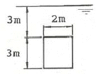
- 88kN
- 176kN
- 265kN
- 353kN
(정답률: 62%)
50. 정상 2차원 속도장 내의 한 점 (2, 3)에서 유선의 기울기 dy/dx는?
- -3/2
- -2/3
- 2/3
- 3/2
(정답률: 47%)
51. 동점성계수가 0.1×10-5m2/s인 유체가 안지름 10cm인 원관 내에 1m/s로 흐르고 있다. 관마찰계수가 0.022이며, 관의 길이가 200m 알 때의 손실수두는 약 몇 m인가? (단, 유체의 비중량은 9800N/m3이다.)
- 22.2
- 11.0
- 6.58
- 2.24
(정답률: 60%)
52. 평판 위의 경계층 내에서의 속도분포(u)가 일 때 경계층 배제분포(boundary layer dislacement thickness)는 얼마인가? (단, y는 평판에서 수직한 방향으로의 거리이며, U는 자유유동의 속도, δ는 경계층의 두께이다.)
(정답률: 26%)
53. 다음 변수 중에서 무차원 수는 어느 것인가?
- 가속도
- 동점성계수
- 비중
- 비중량
(정답률: 63%)
54. 그림과 같이 반지름 R인 원추와 평판으로 구성된 점도측정기(cone and plate viscometer)를 사용하여 액체시료의 원추는 아래쪽 원판과의 각도를 0.5° 미만으로 유지하고 일정한 각속도 w로 회전하고 있으며 갭 사이를 채운 유체의 점도를 위 평판을 정상적으로 돌리는데 필요한 토크를 측정하여 계산한다. 여기서 갭 사이의 속도 분포가 반지름 방향 길이에 선형적일 때, 원추의 밑면에 작용하는 전단응력의 크기에 관한 설명으로 옳은 것은?
- 전단응력의 크기는 반지름 방향 길이에 관계없이 일정하다.
- 전단응력의 크기는 반지름 방향 길이에 비례하여 중가한다.
- 전단응력의 크기는 반지름 방향길이의 제곱에 비례하여 증가한다.
- 전단응력의크기는 반지름 방향 길이의 1/2승에 비례하여 증가한다.
(정답률: 29%)
55. 5℃ 물(밀도 1000kg/m3, 점성계수 1.5×10-3kg/(m∙s)) 안지름 3mm, 길이 9m인 수평파이프 내부를 평균속도 0.9m/s로 흐르게 하는데 필요한 동력은 약 몇 W인가?
- 0.14
- 0.28
- 0.42
- 0.56
(정답률: 33%)
56. 유효 낙차가 100m인 댐의 유량이 10m3/s일 때 효율 90%인 수쳑터빈의 출력은 약 몇 MW인가?
- 8.83
- 9.81
- 10.9
- 12.4
(정답률: 47%)
57. 그림과 같은 수압기에서 피스톤의 지름이 d1=300mm, 이것과 연결된 램(ram)의 지름이 d2=200mm이다. 압력 P1이 1MPa의 압력을 피스톤에 작용시킬 때 주램의 지름이 d3=400mm이면 주램에서 발생하는 힘(W)은 약 몇 kN인가?
- 226
- 284
- 334
- 438
(정답률: 25%)
58. 스프링클러의 중심축을 통해 공급되는 유량은 총3L/s이고 네 개의 회전이 가능한 관을 통해 경사를 이루고 있고 회전반지름은 0.3m이고 각 출구 지름은 1.5cm로 동일하다. 작동 과정에서 스프링클러의 회전에 대한 저항토크가 없을 때 회전 각속도는 약 몇 rad/s인가? (단, 회전축상의 마찰은 무시한다.)
- 1.225
- 4.42
- 4.24
- 12.25
(정답률: 31%)
59. 높이 1.5m의 자동차가 108㎞/h의 속도로 주행할 때의 공기흐름 상태를 높이 1m의 모형을 사용해서 퐁동 실험하여 알아보고자 한다. 여기서 상사법칙을 만족시키기 위한 풍동의 공기 속도는 약 몇 m/s인가? (단, 그 외 조건은 동일하다고 가정한다.)
- 20
- 30
- 45
- 67
(정답률: 52%)
60. 밀도가 p인 액체와 접촉하고 있는 기체 사이의 표면장력이 σ라고 할 때 그림과 같은 지름 d의 원통 모세관에서 액주의 높이 h를 구하는 식은? (단, g는 중력가속도이다.)
(정답률: 56%)
4과목: 기계재료 및 유압기기
61. 경도가 매우 큰 담금질한 강에 적당한 강인성을 부여할 목적으로 A1 변태점 이하의 일정온도로 가열 조작하는 열처리법은?
- 퀜칭(quenching)
- 템퍼링(tempering)
- 노멀라이징(normalizing)
- 마퀜칭(marquenching)
(정답률: 66%)
62. 피아노선재의 조직으로 가장 적당한 것은?
- 페라이트(ferrite)
- 소르바이트(sogbite)
- 오스테나이트(austenite)
- 마텐자이트(martensite)
(정답률: 68%)
63. 마텐자이트(martensite) 변태의 특징에 대한 설명으로 틀린 것은?
- 마텐자이트는 고용체의 단일상이다.
- 마텐자이트 변태는 확산 변태이다.
- 마텐자이트 변태는 협동적 원자운동에 의한 변태이다,
- 마텐자이트의 결정 내에는 격자경함이 존재한다.
(정답률: 47%)
64. 순철(α-Fe)의 자기변태 온도는 약 몇℃ 인가?
- 210℃
- 768℃
- 910℃
- 1410℃
(정답률: 67%)
65. 황동 가공재 특히 관∙봉 등에서 잔류응력에 기인하여 균열이 발생하는 현상은?
- 자연균열
- 시효경화
- 탈아연부식
- 저온풀림경화
(정답률: 59%)
66. 빗금으로 표시한 입방격자면의 밀러지수는?
- (100)
- (010)
- (110)
- (111)
(정답률: 75%)
67. Fe-C 평형상태도에서 나타나는 철강의 기본조직이 아닌 것은?
- 페라이트
- 펄라이트
- 시멘타이트
- 마텐자이트
(정답률: 55%)
68. 6:4황동에 Pb을 약 1.5~3.0%를 첨가한 합금으로 정밀가공을 필요로 하는 부품 등에 사용되는합금은?
- 쾌삭황동
- 강력황동
- 델타메탈
- 애드미럴티 황동
(정답률: 55%)
69. 고속도 공구강재를 나타내는 한국산업표준 기호로 옳은 것은?
- SM20C
- STC
- STD
- SKH
(정답률: 63%)
70. 스테인리스강을 조직에 따라 분류한 것 중 틀린 것은?
- 패라이트계
- 마텐자이트계
- 시멘타이트계
- 오스테나이트계
(정답률: 51%)
71. 기름의 압축률이 6.8×10-5cm2/kgf일 때 압력을 0 에서 100kgf/cm2까지 압축하면 체적은 몇 % 감소하는가?
- 0.48
- 0.68
- 0.89
- 1.46
(정답률: 66%)
72. 그림의 유압 회로도에서 ①의 밸브 명칭으로 옳은 것은?
- 스톱 밸브
- 릴리프 밸브
- 무부하 밸브
- 카운터 밸런스 밸브
(정답률: 72%)
73. 그림과 같이 액추에어이터의 공급 쪽 관로 내의 흐름을 제어함으로써 속도를 제어하는 회로는?
- 시퀀쓰 회로
- 체크 백 회로
- 미터 인 회로
- 미터 아웃 회로
(정답률: 72%)
74. 공기압 장치와 비교하여 유압장치의 일반적인 특징에 대한 설명 중 틀린 것은?
- 인화에 따른 폭발의 위험이 적다.
- 작은 장치로 큰 힘을 얻을 수 있다.
- 입력에 대한 출력의 응답이 빠르다.
- 방청과 윤활이 자동적으로 이루어진다.
(정답률: 65%)
75. 4포트 3위치 방향밸브에서 일명 센터 바이패스형이라고도 하며, 중립이치에서 A,B 포트가 모두 닫히면 실린더는 임의의 위치에서 고정되고, 또 P 포트와 T 포트가 서로 통하게 되므로 펌프를 무부하 시킬 수 있는 형식은?
- 텐덤 센터형
- 오픈 센터형
- 클로즈드 센터형
- 펌프 클로즈드 센터형
(정답률: 57%)
76. 그림과 같은 유압기호의 조작방식에 대한 설명으로 옳지 않은 것은?
- 2 방향 조작이다.
- 파일럿 조작이다.
- 솔레노이드 조작이다.
- 복동으로 조작할 수 있다.
(정답률: 44%)
77. 관(튜브)의 끝을 넓히지 않고 관과 슬리브의 먹힘 또는 마찰에 의하여 관을 유지하는 관 이음쇠는?
- 스위블 이음쇠
- 플랜지 관 이음쇠
- 플 레어드 관 이음쇠
- 플 레어리스 관 이음쇠
(정답률: 56%)
78. 비중량(specific weight)의 MLT계 차원은? (단, M : 질량, L : 길이, T : 시간)
- ML-1T-1
- ML2T-3
- ML-2T-2
- ML2T-2
(정답률: 62%)
79. 다음 중 일반적으로 가변 용량형 펌프로 사용할 수 없는 것은?
- 내접 기어 펌프
- 축류형 피스톤 펌프
- 반경류형 피스톤 펌프
- 압력 불평형형 베인 펌프
(정답률: 56%)
80. 다음 중 드레인 배출기 붙이 필터를 나타내는 공유압 기호는?
(정답률: 52%)
5과목: 기계제작법 및 기계동력학
81. w인 진동수를 가진 기저 진동에 대한 전달률(TR, transmissbility)을 1 미만으로 하기 위한 조건으로 가장 옳은 것은? (단, 진동계의 고유진동수는 wn이다.)
(정답률: 54%)
82. 스프링으로 지지되어 있는 어느 물체가 매분 120회를 진동할 때 진동수는 약 몇 rad/s 인가?
- 3.14
- 6.28
- 9.42
- 12.57
(정답률: 48%)
83. 질량이 m인 공이 그림과 같이 속력이 v, 각도가 α로 질량이 큰 금속판에 사출되었다. 만일 공과 금속판 사이의 반발계수가 0.8 이고, 공과 금속판 사이의 마찰이 무시된다면 입사각 α와 출사각 β의 관계는?
- α에 관계없이 β = 0
- a > β
- a = β
- a < β
(정답률: 52%)
84. 10°의 기울기를 가진 경사면에 놓인 질량 100kg의 물체에 수평방향의 힘 500 N을 가하여 경사면 위로 물체를 밀어올린다. 경사면의 마찰계수가 0.2라면 경사면 방향으로 2m를 움직인 위치에서 물체의 속도는 약 얼마인가?
- 1.1m/s
- 2.1m/s
- 3.1m/s
- 4.1m/s
(정답률: 31%)
85. 그림과 같은 1자유도 진동 시스템에서 임계 감쇠계수는 약 몇 N∙s/m인가?
- 80
- 400
- 800
- 2000
(정답률: 55%)
86. 길이가 1m이고 질량이 5kg인 균일한 막대가 그림과 같이 지지되어 있다. A점은 힌지로 되어 있어 B점에 연결된 줄이 갑자기 끊어졌을 때 막대는 자유로이 회전한다. 여기서 막대가 수직위치에 도달한 순간 각속도는 약 몇 rad/s 인가?
- 2.62
- 3.43
- 3.91
- 5.42
(정답률: 21%)
87. 그림과 같이 질량이 m이고 길이가 L인 균일한 막대에 대하여 A점을 기준으로 한 질량 관성모멘트를 나타내는 식은?
- mL2
(정답률: 50%)
88. x방향에 대한 비감쇠 자유진동 식은 다음과 같이 나타난다. 여기서 시간(t) = 0 일 때의 변위를 x0속도를 v0라 하면 이 진동의 진폭을 옳게 나타낸 것은? (단, m은 질량, k는 스프링 상수이다.)
(정답률: 19%)
89. 북극과 남극이 일직선으로 관통된 구멍을 통하여, 북극에서 지구 내부를 향하여 초기속도 v0=10m/s로 한 질점을 던졌다. 그 질점이 A점(S = R/2)을 통과할 때의 속력은 약 얼마인가? (단, 지구내부는 균일한 물질로 채워져 있으며, 중력가속도는 O점에서 0이고, O점으로 부터의 위치 S에 비례한다고 가정한다. 그리고 지표면에서 중력가속도는 9.8m/s2, 지구 반지름은 R=6371 km이다.)
- 6.84km/s
- 7.90km/s
- 8.44km/s
- 9.81km/s
(정답률: 23%)
90. 물방울이 떨어지기 시작하여 3초 후의 속도는 약 몇 m/s 인가? (단, 공기의 저항은 무시하고, 초기속도는 0으로 한다.)
- 29.4
- 19.6
- 9.8
- 3
(정답률: 62%)
91. 피복 아크용접에서 피복제의 주된 역할이 아닌 것은?
- 용착효율을 높인다.
- 아크를 안정하게 한다.
- 질화를 촉진한다.
- 스패터를 적게 발생시킨다.
(정답률: 69%)
92. 선반에서 절삭비(cutting ratio,  ) 의 표현식으로 옳은 것은? (단, ø의 전단각, a는 공구 윗면 경사각이다.)
) 의 표현식으로 옳은 것은? (단, ø의 전단각, a는 공구 윗면 경사각이다.)
(정답률: 39%)
93. 표면경화법에서 금속침투법 중 아연을 침투시키는 것은?
- 칼로라이징
- 세라다이징
- 크로마이징
- 실리코나이징
(정답률: 71%)
94. 테르밋 용접(thermit welding)의 일반적인 특징으로 틀린 것은?
- 전력 소모가 크다.
- 용접시간이 비교적 짧다.
- 용접작업 후의 변형이 작다.
- 용접 작업장소의 이동이 쉽다.
(정답률: 49%)
95. 4개의 조가 각각 단독으로 이동하여 불규칙한 공작물의 고정에 적합하고 편심가공이 가능한 선반척은?
- 연동척
- 유압척
- 단동척
- 콜릿척
(정답률: 54%)
96. 프레스 가공에서 전단가공의 종류가 아닌 것은?
- 세이빙
- 블랭킹
- 트리밍
- 스웨이징
(정답률: 55%)
97. 초음파 가공의 특징으로 틀린 것은?
- 부도체도 가공이 가능하다.
- 납, 구리, 연강의 가공이 쉽다.
- 복잡한 형상도 쉽게 가공한다.
- 공작물에 가공 변형이 남지 않는다.
(정답률: 49%)
98. 지름 100mm, 판의 두께 3mm, 전단저항 45kgf/mm2인 SM40C 강판을 전단할 때 전단하중은 약 몇 kgf 인가?
- 42410
- 53240
- 67420
- 70680
(정답률: 56%)
99. 용탕의 충전 시에 모래의 팽창력에 의해 주형이 팽창하여 발생하는 것으로, 주물 표면에 생기는 불규칙한 형상의 크고 작은 돌기 모양을 하는 주물 결함은?
- 스캡
- 탕경
- 블로홀
- 수축공
(정답률: 40%)
100. 와이어 컷(wire cut) 방전가공의 특징으로 틀린 것은?
- 표면거칠기가 양호하다.
- 담금질강과 초경합금의 가공이 가능하다.
- 복잡한 형상의 가공물을 높은 정밀도로 가공할 수 있다.
- 가공물의 형상이 복잡함에 따라 가공속도가 변한다.
(정답률: 49%)
먼저, 봉의 단면적을 구해야 한다. 봉의 지름이 10mm 이므로 반지름은 5mm 이다. 따라서, 단면적은 πr^2 = 3.14 x 5^2 = 78.5 mm^2 이다.
P = F/A 이므로, F = P x A = 8 x 10^3 N = 8,000 N 이다.
응력은 σ = F/A = 8,000 N / 78.5 mm^2 = 101.91 MPa 이다.
세로탄성계수는 E = σ/ε 이므로, ε = σ/E = 101.91 MPa / 210 GPa = 0.0004857 이다.
변형률은 ε x L = 0.0004857 x 15,000 mm = 7.29 mm 이다.
따라서, 변형량은 약 7.29 mm 이므로, 약 0.73 cm 이다.
정답은 "0.73" 이다.